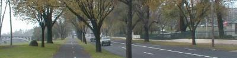
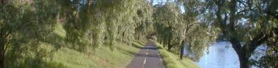
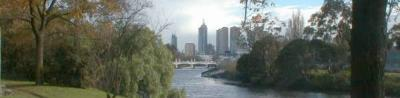
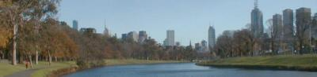

 |
 |
|
That day I went to the city, Melbourne, on foot. I took a road along Yarra River as my first time. Going to the city, I thought of how long would it take there.
From the bridge near our flat I could see the high buildings of the city far way in hazy.
We estimated the distance at a hour or more than a hour, and if it were in a hour, we would be very lucky to walk. Anyway we walked vigorously. The reason why we chose a way was supposed to be the most nearest way on map. However, after a while we aware of the beauty. The huge road had a row of trees on both sides and between the road and the river was a path. So we walked through the path and sometimes walked on the road because the path often connected the road. Watching birds around the bank and people rowing a boat on the river, we could enjoy strolling. The more we closed the city, the more we had wide bank spreading in front of us and height buildings of the city clearly.
Actually it was 50 minutes to reach at the entrance of city.
| |
 |
 |
|
After that, we are used to taking a walk to Melbourne mostly every week.
And we found something, this road was a scenic road as sign saying. Secondly this view is the one of most beautiful Melbourne because a picture postcard indicated it.
This river side road give us enjoy so much every time we go out.
|
|